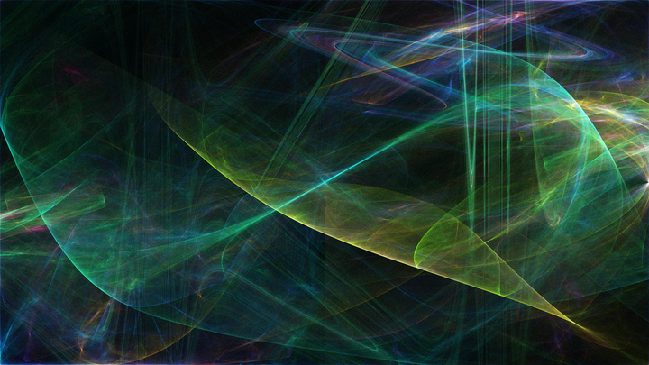

Portfolio
My portfolio is organized by programming language. Quick navigation links: [C/C++] [Ruby] [Python] [Rust] [JavaScript] [web design] [shell]
C/C++
- cfractal is a program I wrote for CodeDay Houston in winter of 2015 with one of my friends. It won one of the four awards given out at the end of the event. cfractal generates beautiful fractal flames; here's one of my favorites:
 - phondue is a tool used to enter International Phonetic Alphabet symbols via a chart and digraphs (ex.
THautomatically becomesθ), since I wasn't satisfied with the existing tools. The folks on /r/linguistics and /r/conlangs found it useful, and in fact I use it regularly myself. - caveman-duels was written for a King of the Hill programming contest on Stack Exchange, which had over 50 participants. Aside from having fun, I learned a lot about C++ from writing it!
- snowman is an esoteric programming language. Again, it was both fun to work on and taught me many things about C++. Here's an example Snowman program (it does ROT13 on its input):
}vg:*#96nG|#110nL,bO|#64nG'(#78nL('>Needless to say, readability was not a primary design goal. (In fact, being as confusing and unreadable as possible was a major objective.)
bO,oR|:#13nA;:#109nG|#123nL,bO|#77nG
'(#91nL('>bO,oR|:#13nS;:#;bI;bI;aMsP
Ruby
- i3bang is a preprocessor for i3 config files, which are traditionally very verbose and repetitive (in an attempt to remain both flexible and easy to understand). I wrote i3bang with the goal of preserving those qualities while cutting down on some of the cruft, and I and several others have found it helpful (airblader himself called it "insanely cool," which I'm pretty proud of :)).
Python
- ascii-gallows-club and ascii-checkers-club were pretty much my first experience with working on a project as a team. They were both written in Python by me and three other people.
Rust
- kfp is what this website runs on. It was the topic of my first blog post.
- rustyham is a Hamming code generator in Rust. I wrote rustyham primarily to see what it's like to work with a project complete with tests with Travis CI integration, put on a package manager, etc., but it's also (AFAIK) the first Hamming code program to be published on crates.io, where it has >300 downloads.
JavaScript
- chatception and sevichat are two userscripts for Stack Exchange chat that I and others find immensely useful.
web design
- This website was hand-coded by me. :)
- phondue-web is a JavaScript port of Phondue, described in the C portion of my portfolio. (You can try it in your browser!)